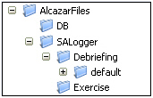

Mantenimiento del Sistema
A medida que se vaya prolongando en el tiempo el empleo del Simulador, la Base de Datos del sistema puede ser actualizada o ampliada por el usuario al introducir nuevos equipos, unidades, ejercicios, etc.. Por tanto, con el paso del tiempo la Base de Datos puede evolucionar, enriquecerse, y permitir cada vez un mayor número de posibilidades para la simulación de distintas situaciones.
Por otro lado, las grabaciones de Ejercicios, tanto en modo continuo como en modo fotografía, permite conservar un histórico de los mismos, permitiendo así, de alguna manera, almacenar la experiencia adquirida.
Por tanto, ya que son elementos que evolucionan con la experiencia y que dan valor añadido al Simulador, se recomienda prestar una especial atención al mantenimiento de la Base de Datos y de las Grabaciones de Ejercicios generadas. Este mantenimiento consistirá en el almacenamiento periódico de los datos en una unidad externa al sistema, de manera que sólo se conserven en el disco del sistema aquellos datos que están en uso, eliminando el resto de los datos, que en cualquier caso, si fuera necesario podrían recuperarse de las copias externas. Este mecanismo permitirá mantener el sistema limpio de datos obsoletos.
Para realizar este mantenimiento, se hace necesario un mecanismo de copias de seguridad de estos datos. En este apartado se incluyen instrucciones y recomendaciones para realizar copias de seguridad de la Base de Datos y de las Grabaciones de Ejercicios.
Realización de Copias de Seguridad de la Base de Datos y de las Grabaciones de Ejercicios
La consola que actúa como Servidor del Sistema es la encargada de almacenar la información correspondiente a la Base de Datos del sistema y las grabaciones de Ejercicios. Esta información se encuentra generalmente en la carpeta AlcazarFiles situada al igual que el resto de ficheros de la aplicación en C:\Archivos de Programa\ADDocean. Las copias de seguridad deberán hacerse, por tanto, del contenido de esta carpeta.

No obstante, en algunas instalaciones la distribución de los carpetas puede ser diferente, en cuyo caso las copias de seguridad se realizarán de las carpetas que se hayan configurado para almacenar la información requerida.
Con independencia de su ubicación en el disco, la información que debe incluirse en la copia de seguridad es la siguiente:
Por necesidades del sistema o requerimiento del cliente, el fichero que contiene la base de datos del sistema se puede guardar en una ubicación diferente. En este caso la nueva ubicación será la que se establezca en el fichero de configuración Ulises.rc, en la siguiente entrada:
[DataBaseService]
DataBaseDirectory = C:/Archivos de Programa/ADDocean/AlcazarFiles/DB
Por necesidades del sistema o requerimiento del cliente, los ficheros que contienen las grabaciones de los ejercicios, así como los ficheros de audio, se pueden guardar en una ubicación diferente. En este caso la nueva ubicación será la que se establezca en el fichero de configuración Ulises.rc, en las siguientes entradas:
[SALogger]
# Ruta en la que se almacenarán las grabaciones de ejercicios para análisis.
RecorderDirectory = C:/Archivos de Programa/ADDocean/AlcazarFiles/SALogger/Debriefing
# Ruta en la que se almacenarán los ejercicios grabados para ejecución.
PhotoDirectory = C:/Archivos de Programa/ADDocean/AlcazarFiles/SALogger/Exercises
# Carpeta en la que se almacenan los ficheros de audio
ActiveLoggerDir = default
Realización de Copias de Seguridad de los datos de los equipos
Cada consola del simulador almacena los datos introducidos por el operador en los equipos, entre estos datos se encuentran los waypoints y rutas programadas en el equipo GPS y la programación del equipo RDF. Estos datos se encuentran generalmente en la carpeta AlcazarFiles situada al igual que el resto de ficheros de la aplicación en C:\Archivos de Programa\ADDocean. Las copias de seguridad de cada consola deberá hacerse, por tanto, del contenido de esta carpeta.
No obstante, en algunas instalaciones la distribución de los carpetas puede ser diferente, en cuyo caso las copias de seguridad se realizarán de las carpetas que se hayan configurado para almacenar la información requerida.
Con independencia de su ubicación en el disco, la información que debe incluirse en la copia de seguridad es la siguiente:
Por necesidades del sistema o requerimiento del cliente, los ficheros que contienen los datos de los equipos se pueden guardar en una ubicación diferente. En este caso la nueva ubicación será la que se establezca en el fichero de configuración Ulises.rc, en las siguientes entradas:
[UlisesRDF]
# Nombre del fichero con la información inicial de configuración del LCD del RDF
InitialInformationFile = C:/Archivos de Programa/ADDocean/AlcazarFiles/ULISESFiles/RDF/RDFInformation.txt
[UlisesGPS]
# Fichero donde se almacenan los waypoints y rutas introducidas por el usuario
WaypointsAndRoutesFile=C:/Archivosde Programa/ADDocean/AlcazarFiles/ULISESFiles/GPS/GPSInformation.txt
Por necesidades del sistema o requerimiento del cliente, los ficheros que contienen los datos de los equipos se pueden guardar en una ubicación diferente. En este caso la nueva ubicación será la que se establezca en el fichero de configuración Ulises.rc, en las siguientes entradas:
[NBDP]
# Ruta en la que se almacenarán los ficheros de DP6
PathForDP6Files = C:/Archivos de Programa/ADDocean/AlcazarFiles/GMDSSFiles/DP6
[FS2570Hw]
ProtocolConfigFile =C:/Archivos de Programa/ADDocean/AlcazarFiles/GMDSSFiles/FS2570/ConfigProtocol.txt
[INMARSAT]
# Ruta en la que se almacenarán los ficheros de Inmarsat FELCOM15
PathForF15Files = C:/Archivos de Programa/ADDocean/AlcazarFiles/GMDSSFiles/INMARSAT/FELCOM15
# Ruta en la que se almacenarán los ficheros de Inmarsat FELCOM82
PathForF82Files = C:/Archivos de Programa/ADDocean/AlcazarFiles/GMDSSFiles/INMARSAT/FELCOM82
[NAVTEX.MessagesFile]
NAVTEXFile = C:/Archivos de Programa/ADDocean/AlcazarFiles/GMDSSFiles/NAVTEX/Messages.saf
Recomendaciones de Soporte y Periodicidad para las Copias de Seguridad:
El soporte recomendado para realizar las Copias de Seguridad, por su capacidad y facilidad de uso es CD-R y CD-RW.
Se recomienda hacer copias de seguridad en un ciclo mensual como se explica:
| Mes 1 | Semana 1 | Copia NO PERMANENTE En juego nº1 de CD-RW |
|
| Semana 2 | Copia NO PERMANENTE En juego nº2 de CD-RW |
||
| Semana 3 | Copia NO PERMANENTE En juego nº3 de CD-RW |
||
| Semana 4 | Copia NO PERMANENTE En juego nº4 de CD-RW |
Copia PERMANENTE En juego nº1 de CD-R |
|
| Mes 2 | Semana 1 | Copia NO PERMANENTE En juego nº1 de CD-RW |
|
| Semana 2 | Copia NO PERMANENTE En juego nº2 de CD-RW |
||
| Semana 3 | Copia NO PERMANENTE En juego nº3 de CD-RW |
||
| Semana 4 | Copia NO PERMANENTE En juego nº4 de CD-RW |
Copia PERMANENTE En juego nº1 de CD-R |
|
| Mes 3 | Semana 1 | Copia NO PERMANENTE En juego nº1 de CD-RW |
|
| Semana 2 | Copia NO PERMANENTE En juego nº2 de CD-RW |
||
| Semana 3 | Copia NO PERMANENTE En juego nº3 de CD-RW |
||
| Semana 4 | Copia NO PERMANENTE En juego nº4 de CD-RW |
Copia PERMANENTE En juego nº1 de CD-R |
|
| Y así sucesivamente ... | |||
Material necesario:
Nota: Cada juego con la cantidad necesaria de CD para contar con capacidad suficiente para hacer una copia de seguridad completa (Base de Datos y Grabaciones de Ejercicios).
Recomendaciones adicionales:
En periodos en los que se considere que se estén generando muchos datos nuevos semanalmente, ya sea en Base de Datos como de Grabaciones de Ejercicios, se recomienda aumentar la periodicidad de las copias de seguridad, intentando siempre seguir un patrón parecido al recomendado. Por ejemplo, realizando dos o tres copias NO PERMANENTES semanales en vez de una y dos copias PERMANENTES mensuales.
En aquellas ocasiones en las que se considere que puntualmente se han generado datos de especial importancia o interés, ya sea en Base de Datos como de Grabaciones de Ejercicios, se recomienda realizar copia de seguridad PERMANENTE adicional.